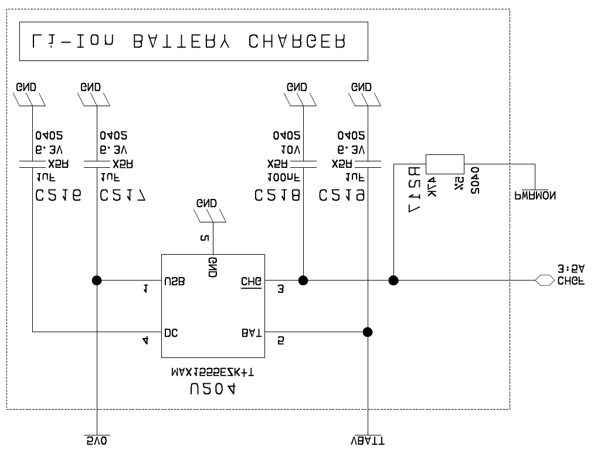
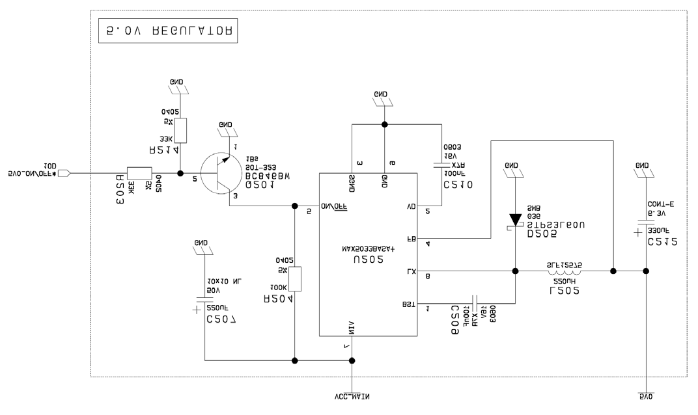

Battery Charger Design
Application Note
80000nt10042a Rev.1 – 2010-10-04


Battery Charger Design Application Note
80000nt10042a Rev.1 – 2010-10-04
APPLICABILITY TABLE
PRODUCT
GC864-QUAD V2
GC864-DUAL V2
GE864-QUAD V2
GE864-DUAL V2
GE864-QUAD AUTOMOTIVE V2
GE865-QUAD
GL865-DUAL
Reproduction forbidden without written authorization from Telit Communications S.p.A. - All Rights Reserved.
Page 2 of 9

Battery Charger Design Application Note
80000nt10042a Rev.1 – 2010-10-04
Disclaimer
The information contained in this document is the proprietary information of Telit
Communications S.p.A. and its affiliates (“TELIT”).
The contents are confidential and any disclosure to persons other than the officers,
employees, agents or subcontractors of the owner or licensee of this document,
without the prior written consent of Telit, is strictly prohibited.
Telit makes every effort to ensure the quality of the information it makes available.
Notwithstanding the foregoing, Telit does not make any warranty as to the
information contained herein, and does not accept any liability for any injury, loss or
damage of any kind incurred by use of or reliance upon the information.
Telit disclaims any and all responsibility for the application of the devices
characterized in this document, and notes that the application of the device must
comply with the safety standards of the applicable country, and where applicable,
with the relevant wiring rules.
Telit reserves the right to make modifications, additions and deletions to this
document due to typographical errors, inaccurate information, or improvements to
programs and/or equipment at any time and without notice.
Such changes will, nevertheless be incorporated into new editions of this document.
Copyright: Transmittal, reproduction, dissemination and/or editing of this document
as well as utilization of its contents and communication thereof to others without
express authorization are prohibited. Offenders will be held liable for payment of
damages. All rights are reserved.
Copyright © Telit Communications S.p.A. 2010.
Reproduction forbidden without written authorization from Telit Communications S.p.A. - All Rights Reserved.
Page 3 of 9


Battery Charger Design Application Note
80000nt10042a Rev.1 – 2010-10-04
Contents
1. Introduction ........................................................................................................... 5
1.1. Scope ............................................................................................................................ 5
1.2. Audience ....................................................................................................................... 5
1.3. Contact Information, Support ...................................................................................... 5
1.4. Document Organization ............................................................................................... 6
1.5. Text Conventions .......................................................................................................... 6
1.6. Related Documents ..................................................................................................... 6
1.7. Document History ........................................................................................................ 6
2. Battery charger design .......................................................................................... 7
2.1. Example of battery chargers ....................................................................................... 7
2.1.1.
Battery Charger with 5V input .......................................................................................... 7
2.1.2.
Battery Charger with up to 76V input ............................................................................... 8
Reproduction forbidden without written authorization from Telit Communications S.p.A. - All Rights Reserved.
Page 4 of 9


Battery Charger Design Application Note
80000nt10042a Rev.1 – 2010-10-04
1.
Introduction
1.1.
Scope
Scope of this document is to provide the guidelines to design a battery charger for
the Telit modules that are not provided with. The battery charger is needed whenever
a battery powered application requires an embedded battery charger.
1.2.
Audience
This document is intended for Telit customers who need to implement a battery
charger in their application.
1.3.
Contact Information, Support
For general contact, technical support, to report documentation errors and to order
manuals, contact Telit Technical Support Center (TTSC) at:
TS-EMEA@telit.com
TS-NORTHAMERICA@telit.com
TS-LATINAMERICA@telit.com
TS-APAC@telit.com
Alternatively, use:
http://www.telit.com/en/products/technical-support-center/contact.php
For detailed information about where you can buy the Telit modules or for
recommendations on accessories and components visit:
http://www.telit.com
To register for product news and announcements or for product questions contact
Telit Technical Support Center (TTSC).
Our aim is to make this guide as helpful as possible. Keep us informed of your
comments and suggestions for improvements.
Telit appreciates feedback from the users of our information.
Reproduction forbidden without written authorization from Telit Communications S.p.A. - All Rights Reserved.
Page 5 of 9


Battery Charger Design Application Note
80000nt10042a Rev.1 – 2010-10-04
1.4.
Document Organization
This document contains the following chapters (sample):
“Chapter 1: “Introduction” provides a scope for this document, target audience,
contact and support information, and text conventions.
“Chapter 2: “Chapter two” gives guideline about how to design a battery charger.
1.5.
Text Conventions
Danger – This information MUST be followed or catastrophic equipment failure
or bodily injury may occur.
Caution or Warning – Alerts the user to important points about integrating the
module, if these points are not followed, the module and end user equipment
may fail or malfunction.
Tip or Information – Provides advice and suggestions that may be useful when
integrating the module.
All dates are in ISO 8601 format, i.e. YYYY-MM-DD.
1.6.
Related Documents
• Hardware User Guide of the relevant Telit module
• AT Command User Guide, 80000ST10025a
• Telit modules SW User Guide, 1vv0300784
1.7.
Document History
Revision
Date
Changes
0
2010-08-27
First issue
1
2010-10-04
Added GL865-DUAL to the applicability table
Reproduction forbidden without written authorization from Telit Communications S.p.A. - All Rights Reserved.
Page 6 of 9



Battery Charger Design Application Note
80000nt10042a Rev.1 – 2010-10-04
2.
Battery charger design
The products listed in the applicability table are not equipped with a battery charger.
Aim of this application note therefore, is to help the customers to design a battery
charger that goes along with a Telit module, suitable for applications that are battery
powered with a Li-Ion (or Li-Polymer) cell.
2.1.
Example of battery chargers
2.1.1.
Battery Charger with 5V input
Fig 1: Battery Charger with 5V input power supply.
The MAX1555 charges the Li-Ion Cell by CCCV technique (Constant Current Constant
Voltage).
If VBATT is less than 3 V, the device enters in pre-charge mode, where recharging
current is limited to 40 mA. That low recharge current is suitable to “recover” an
over-discharged cell.
Reproduction forbidden without written authorization from Telit Communications S.p.A. - All Rights Reserved.
Page 7 of 9


Battery Charger Design Application Note
80000nt10042a Rev.1 – 2010-10-04
With VBATT voltage between 3 V and 4.2 V, the recharge current is 90 mA Typ
(Constant Current).
With 4.2 V VBATT, the recharge continues in Constant Voltage. In Constant Voltage
mode, the recharge current is reduced with the recharge progress. When the
recharge current falls to 50 mA Typ, the CHGF pin goes high to indicate the recharge
of the battery has been completed. A GPI/O of the M2M can be used to monitor the
state of recharge.
NOTE:
the CHGF pin is high also without power supply on the MAX 1555.
With power supply on USB input (5V0 in figure “Li-Ion BATTERY CHARGER”), the
Constant Current recharge is 90 mA typ.
With power supply on DC input, the Constant Current recharge is 280 mA typ.
If it is necessary a higher Constant Current recharge, it is necessary to make use of
the MAX 1811: Constant Current 450 mA typ.
The 450 mA recharge current is suitable for a cell capacity up to 2000 mAh.
The Li-Ion battery will be charged over the current range of 0.1 CmA to 1.5 CmA.
450 mA are 0.4 CmA for the 2000 mAh battery.
450 mA are 1.1 CmA for the 500 mAh battery.
For the Li-Ion BATTERY CHARGER, the BATT leakage current (without input power
supply) is limited: 1 μA typ.
It is not provided a battery temperature gauging to manage the recharge current
regarding temperature battery.
2.1.2.
Battery Charger with up to 76V input
If it is necessary a wider power supply voltage, it is possible to make use of the
MAX5033B to obtain a power supply voltage up to 76 V DC input voltage.
The MAX 5033B is a step down DC-DC converter with 5 V output voltage. The 500 mA
output current is enough to power supply the MAX 1555 or MAX 1811.
The BJT is optional: if it is not necessary the ON /OFF function for the voltage
regulator, the BJT can be left out.
Reproduction forbidden without written authorization from Telit Communications S.p.A. - All Rights Reserved.
Page 8 of 9



Battery Charger Design Application Note
80000nt10042a Rev.1 – 2010-10-04
Fig.2: Wider input power supply voltage (up to 76 V DC input voltage).
Reproduction forbidden without written authorization from Telit Communications S.p.A. - All Rights Reserved.
Page 9 of 9
Document Outline